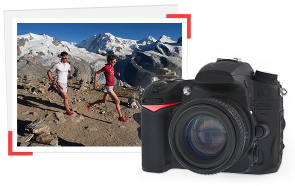
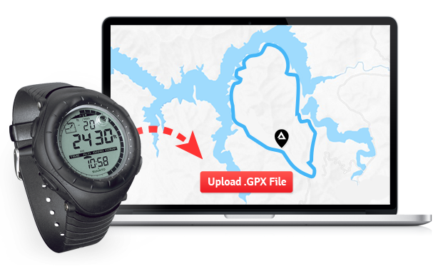
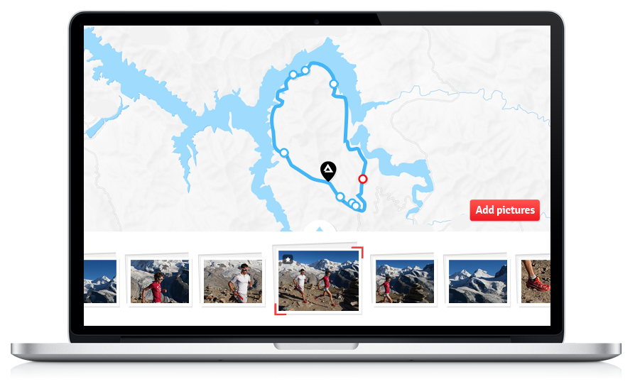
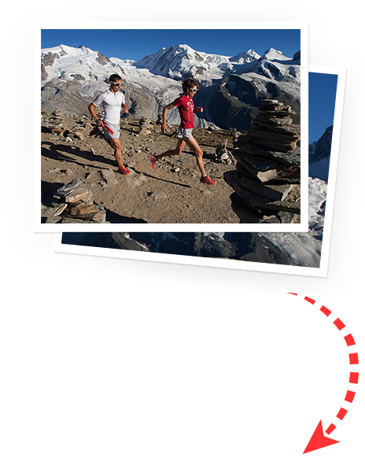
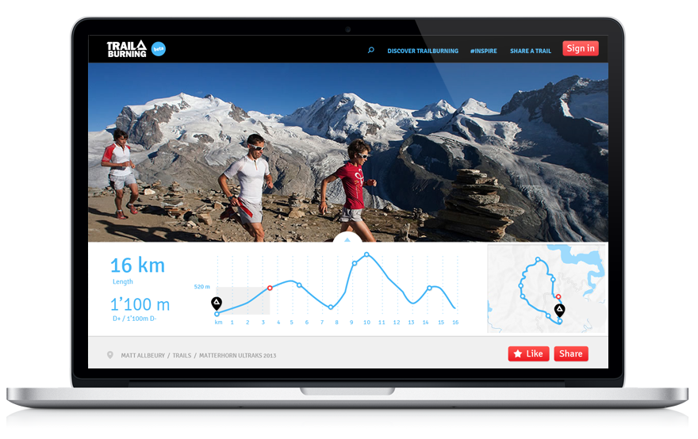
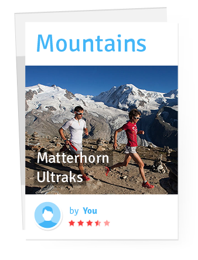

Trail Maker is here, make Trails!
Join today and start making your own TrailCards, to share it with Trailburners around the world.
Give it your best shots.
Take photos on your next Trail at the highest resolution to get the best images possible.


We turn the .GPX into your Trail.
Trail Making is as simple as uploading a GPX file.
Fill the Trail with beautiful pictures.
As many as you want!



Tell your trail story.
Share your thoughts and tips about the trail.

Your TrailCard is created and ready to be published.
You can share it with your friends and inspire the Trailburning community.
To make sure you don’t forget anything, you can check or print our Trailburning memo before your next Trail.